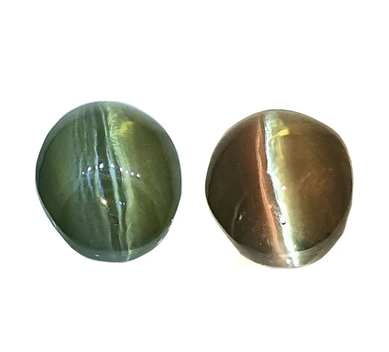

貓眼與亞歷山大變石：金綠寶石的雙絕
金綠寶石是個低調的家族：一個睡著時眼睛閉上，一個白天是綠的、晚上變紅的——兩個都是寶石界的傳奇。

核心定義
金綠寶石（chrysoberyl）是鈹鋁氧化物（BeAl₂O₄），硬度 8.5，僅次於鑽石與剛玉。家族中有兩個明星：貓眼石（cat's-eye）呈現「開眼」光帶，亞歷山大變石（alexandrite）會從日光下的綠轉為燈光下的紅——兩者都是極其罕見的品種。
注意：只有金綠寶石的貓眼才能單稱「貓眼石」（cat's-eye），其他寶石（石英貓眼、碧璽貓眼）必須冠上寶石名——這是寶石學界的專屬命名權。
特徵與分類
| 品種 | 光學效應 | 顏色 | 成因 | 稀有度 |
|---|---|---|---|---|
| 金綠貓眼 | 開眼（貓眼效應） | 黃綠/蜜黃 | 平行針狀包裹體 | 高 |
| 亞歷山大變石 | 變色效應 | 綠↔紅 | 鉻離子 | 極高 |
| 普通金綠寶石 | 無 | 黃綠 | — | 中 |
貓眼效應（chatoyancy）由密集平行的針狀包裹體反射光形成——光帶越細、越亮、越居中，價值越高；變色效應由鉻離子對光的選擇性吸收造成——日光（藍白光）下顯綠、白熾燈（暖光）下顯紅。
科學原理
貓眼效應的物理：蛋面寶石內部平行排列的空管或針狀包裹體（如金紅石針），像一排微鏡子——光垂直照入後，只有與針垂直方向的光被反射，形成一條明亮光帶。轉動寶石，光帶會「掃過」表面，像貓眼開合。
變色效應的物理：鉻離子在金綠寶石中吸收光譜中段的黃綠色光，但對藍紫端與紅端的吸收較弱——日光藍光多，寶石反射藍綠光（顯綠）；燈光紅光多，反射紅光（顯紅）。變色越強烈，價值越高。
鑑定與鑑別方法
- 看光帶：金綠貓眼光帶細、亮、活動（石英貓眼較寬糊）
- 測硬度：8.5（石英 7，刮痕測試分辨）
- 看變色強度：亞歷山大變石綠↔紅轉換明顯
- 折射率：金綠寶石 1.74–1.75
- 證書：頂級貓眼與變石要求來源與處理說明
市場行情與保養建議
行情：金綠貓眼 2026 年零售參考，普通每克拉新台幣數千至數萬元，斯里蘭卡「蜜色」頂級貓眼每克拉可達 10–50 萬元；亞歷山大變石更貴——俄羅斯產、變色強烈者每克拉數十萬元以上。
提醒：市場上「人造變石」（合成金綠寶石）與「變色石榴石」混淆嚴重——認證書、看變色與包裹體。價格僅供參考，非投資建議。
常見誤區
石英貓眼、碧璽貓眼、磷灰石貓眼都有貓眼效應——但只有金綠寶石能簡稱「貓眼石」，其他都要加寶石名。
它 1830 年在俄羅斯烏拉山首度發現並以沙皇亞歷山大二世命名——但如今巴西、斯里蘭卡、東非也有產出。
冷知識
斯里蘭卡傳說貓眼石是「蛇的眼珠」——佩戴者能看穿謊言，也被視為避邪護身符。
1830 年發現當天恰逢沙皇亞歷山大二世的生日——它因此得名，也被稱為「俄羅斯的國石」。
反直覺觀點
它的傳奇在夜間——白天的綠只是過場，燈下的紅才是高潮。收藏變石，重點是「變色比」，而不是單一顏色。
光帶是內部的針狀包裹體排出來的——切磨師只能「順著針向」切蛋面，無法製造眼睛。大自然排針，人類只是把針露出來。